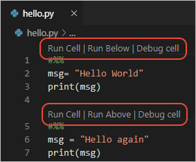
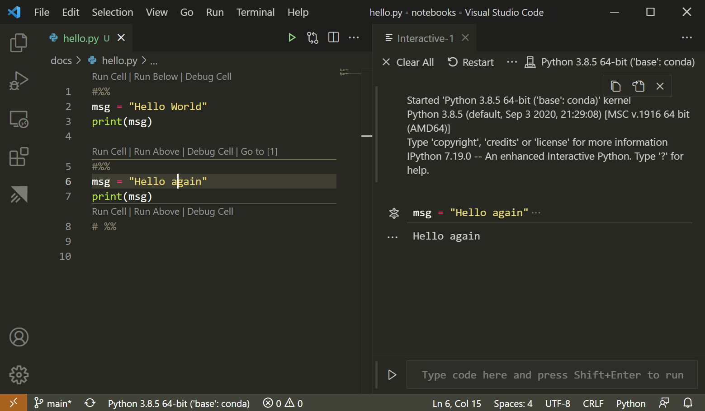
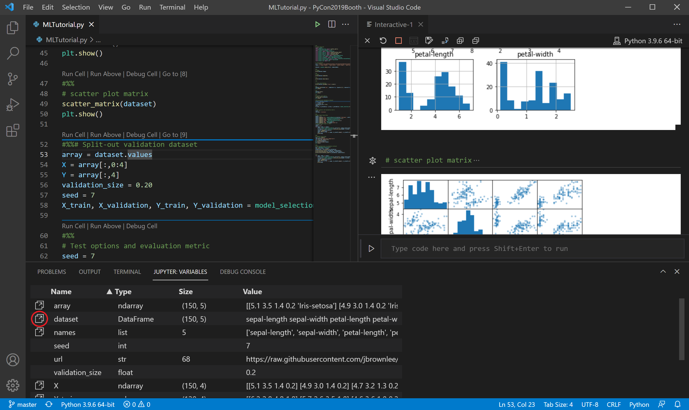
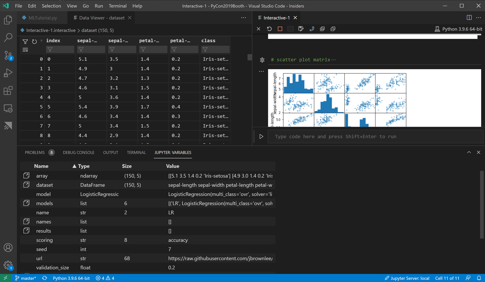
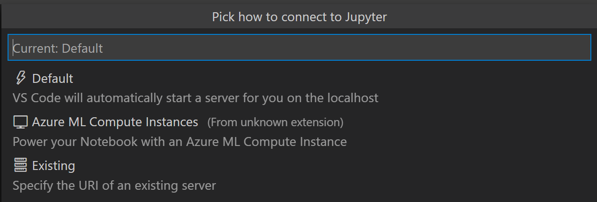
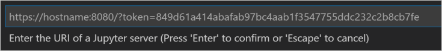
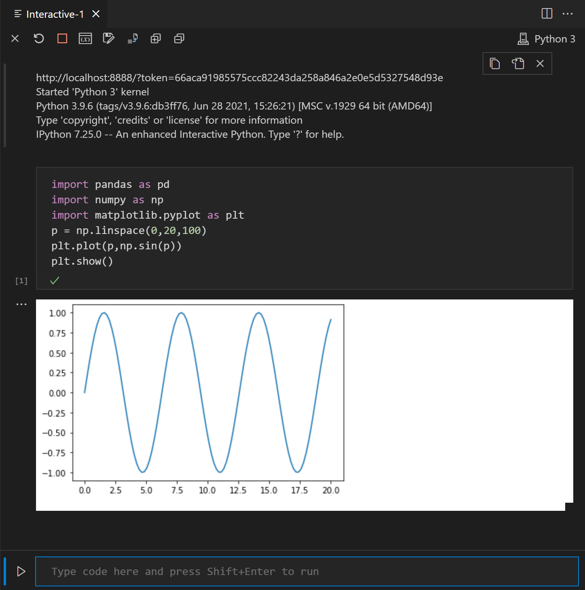
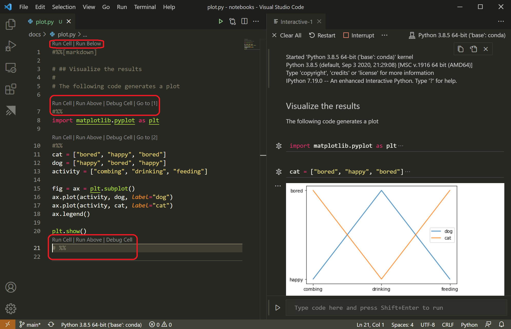

Python Interactive window
Jupyter (formerly IPython Notebook) is an open-source project that lets you easily combine Markdown text and executable Python source code on one canvas called a notebook. Visual Studio Code supports working with Jupyter Notebooks natively, as well as through Python code files. This topic covers the support offered through Python code files and demonstrates how to:
- Work with Jupyter-like code cells
- Run code in the Python Interactive Window
- View, inspect, and filter variables using the Variables Explorer and Data Viewer
- Connect to a remote Jupyter server
- Debug a Jupyter notebook
- Export a Jupyter notebook
To work with Jupyter notebooks, you must activate an Anaconda environment in VS Code, or another Python environment in which you've installed the Jupyter package. To select an environment, use the Python: Select Interpreter command from the Command Palette (kb(workbench.action.showCommands)).
Once the appropriate environment is activated, you can create and run Jupyter-like code cells, connect to a remote Jupyter server for running code cells, and export Python files as Jupyter notebooks.
Jupyter code cells
You define Jupyter-like code cells within Python code using a # %% comment:
# %%
msg = "Hello World"
print(msg)
# %%
msg = "Hello again"
print(msg)
Note: Make sure to save the code shown above in a file with a .py extension.
When the Python extension detects a code cell, it adds Run Cell and Debug Cell CodeLens adornments. The first cell also includes Run Below and all subsequent cells include Run Above:

Note: By default, Debug Cell just steps into user code. If you want to step into non-user code, you need to uncheck Data Science: Debug Just My Code in the Python extension settings (
kb(workbench.action.openSettings)).
Run Cell applies to only the one code cell. Run Below, which appears on the first cell, runs all the code in the file. Run Above applies to all the code cells up to, but not including, the cell with the adornment. You would use Run Above, for example, to initialize the state of the runtime environment before running that specific cell.
Selecting a command starts Jupyter (if necessary, which might take a minute), then runs the appropriate cell(s) in the Python Interactive window:

You can also run code cells using (kbstyle(Ctrl+Enter)) or the Python: Run Selection/Line in Python Terminal command (kbstyle(Shift+Enter)). After using this command, the Python extension automatically moves the cursor to the next cell. If you're in the last cell in the file, the extension automatically inserts another # %% delimiter for a new cell, mimicking the behavior of a Jupyter notebook.
You can also click in the margin to the left of line numbers to set breakpoints. Then you can use Debug Cell to start a debugging session for that code cell. The debugger stops execution at breakpoints and allows you to step through code one line at a time and inspect variables (see Debugging for details).
Additional commands and keyboard shortcuts
The following table lists additional commands and keyboard shortcuts supported when working with code cells.
| Command | Keyboard shortcut |
|---|---|
| Python: Go to Next Cell | kbstyle(Ctrl+Alt+]) |
| Python: Go to Previous Cell | kbstyle(Ctrl+Alt+[) |
| Python: Extend Selection by Cell Above | kbstyle(Ctrl+Shift+Alt+[) |
| Python: Extend Selection by Cell Below | kbstyle(Ctrl+Shift+Alt+]) |
| Python: Move Selected Cells Up | kbstyle(Ctrl+; U) |
| Python: Move Selected Cells Down | kbstyle(Ctrl+; D) |
| Python: Insert Cell Above | kbstyle(Ctrl+; A) |
| Python: Insert Cell Below | kbstyle(Ctrl+; B) |
| Python: Insert Cell Below Position | kbstyle(Ctrl+; S) |
| Python: Delete Selected Cells | kbstyle(Ctrl+; X) |
| Python: Change Cell to Code | kbstyle(Ctrl+; C) |
| Python: Change Cell to Markdown | kbstyle(Ctrl+; M) |
Python Interactive window
The Python Interactive window, mentioned in the previous section, can be used as a standalone console with arbitrary code (with or without code cells).
To use the window as a console, open it with the Jupyter: Create Interactive Window command from the Command Palette. You can then type in code, using kbstyle(Enter) to go to a new line and kbstyle(Shift+Enter) to run the code.
To use the window with a file, use the Jupyter: Run Current File in Python Interactive Window command from the Command Palette.
IntelliSense
The Python Interactive window has full IntelliSense – code completions, member lists, quick info for methods, and parameter hints. You can be just as productive typing in the Python Interactive window as you are in the code editor.

Plot Viewer
The Plot Viewer gives you the ability to work more deeply with your plots. In the viewer you can pan, zoom, and navigate plots in the current session. You can also export plots to PDF, SVG, and PNG formats.
Within the Python Interactive window, double-click any plot to open it in the viewer, or select the expand button on the upper left corner of the plot.

Note: The Python Interactive window supports rendering plots created with matplotlib and Altair.
Variables Explorer and Data Viewer
Within the Python Interactive window, it's possible to view, inspect, and filter the variables within your current Jupyter session. Select the Variables button in the interactive window toolbar to open the Variables explorer after running code and cells, you'll see a list of the current variables, which will automatically update as variables are used in code.

For additional information about your variables, you can also double-click on a row or use the Show variable in data viewer button to see a more detailed view of a variable in the Data Viewer. Once open, you can filter the values by searching over the rows.

Connect to a remote Jupyter server
You can offload intensive computation in a Jupyter notebook to other computers by connecting to a remote Jupyter server. Once connected, code cells run on the remote server rather than the local computer.
To connect to a remote Jupyter server:
Run the Jupyter: Specify local or remote Jupyter server for connections command from the Command Palette (
kb(workbench.action.showCommands)).Select how you would like to connect to a Jupyter server. 
If working remotely, provide the server's URI (hostname) with the authentication token included with a
?token=URL parameter when prompted. (If you start the server in the VS Code terminal with an authentication token enabled, the URL with the token typically appears in the terminal output from where you can copy it.) Alternatively, you can specify a username and password after providing the URI.
The Python Interactive window indicates where code is run by displaying the URI (which is blurred out in the image below):

Note: For added security, Microsoft recommends configuring your Jupyter server with security precautions such as SSL and token support. This helps ensure that requests sent to the Jupyter server are authenticated and connections to the remote server are encrypted. For guidance about securing a notebook server, see the Jupyter docs.
Convert Jupyter notebooks to Python code file
When you've activated an environment with Jupyter installed, you can open a Jupyter notebook file (.ipynb) in VS Code and then convert it to Python code. Once you've converted the file, you can run the code as you would with any other Python file and also use the VS Code debugger. Opening and debugging notebooks in VS Code is a convenient way to find and resolve code bugs, which is difficult to do directly in a Jupyter notebook.
When you open a notebook file, Visual Studio Code will open it in the Notebook Editor automatically. Use the convert icon on the toolbar to convert the Notebook (.ipynb) file to a Python file (.py).
Select the convert icon followed by "Python Script", wait a few seconds, and then VS Code opens the converted notebook in an untitled file. The notebook's cells are delimited in the Python file with # %% comments; Markdown cells are converted wholly to comments preceded with # %% [markdown], and render as HTML in the interactive window alongside code and output such as graphs:

Note: The first time you run code cells in a Python file, the Python extension starts a Jupyter server. It may take some time for the server to start up and for the Python Interactive window to appear with the results of the code.
Debug a Jupyter notebook
The Visual Studio Code debugger lets you step through your code, set breakpoints, examine state, and analyze problems. Using the debugger is a helpful way to find and correct issues in notebook code.
In VS Code, activate a Python environment in which Jupyter is installed, as described at the beginning of this article.
Import the notebook's
.ipynbfile into VS Code as described in the previous section. (Download the file first if you're using a cloud-based Jupyter environment such as Azure Notebooks.)To start the debugger, use one of the following options:
- For the whole notebook, open the Command Palette (
kb(workbench.action.showCommands)) and run the Jupyter: Debug Current File in Python Interactive Window command. - For an individual cell, use the Debug Cell adornment that appears above the cell. The debugger specifically starts on the code in that cell. By default, Debug Cell just steps into user code. If you want to step into non-user code, you need to uncheck Data Science: Debug Just My Code in the Python extension settings (
kb(workbench.action.openSettings)).
- For the whole notebook, open the Command Palette (
To familiarize yourself with the general debugging features of VS Code, such as inspecting variables, setting breakpoints, and other activities, review VS Code debugging.
As you find issues, stop the debugger, correct your code, save the file, and start the debugger again.
When you're satisfied that all your code is correct. Save the file, then export the notebook as described in the following section. You can then upload the notebook to your normal Jupyter environment.
Export a Jupyter notebook
In addition to opening a Jupyter notebook, you can also use one of the following commands from the Command Palette (kb(workbench.action.showCommands)) to export content from a Python file in VS Code to a Jupyter notebook (with the .ipynb extension).
- Jupyter: Export Current Python File as Jupyter Notebook: creates a Jupyter notebook from the contents of the current file, using the
# %%and# %% [markdown]delimiters to specify their respective cell types. - Jupyter: Export Current Python File and Output as Jupyter Notebook: creates a Jupyter notebook from the contents of the current file and includes output from code cells.
- Jupyter: Export Interactive Window as Jupyter Notebook: creates a Jupyter notebook from the contents of the Python Interactive window.
After exporting the contents, VS Code displays a prompt through which you can open the notebook in a browser.